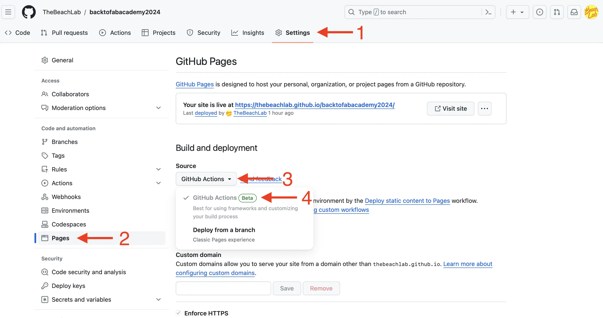

Task A:
Plan and sketch a potential final project.
Task B:
Follow a step-by-step Git tutorial.
Build a personal website in the class repository describing yourself and your final project.
Let me explain this… I’ll explain another day.
I never knew how to type properly, although I always wanted to learn.
While working on organizing Fab15 in Egypt, I noticed that Sherry
Lassiter has a great typing skill. That was the moment I decided to
learn. There’s an advantage when you learn something from scratch, and
that is you have no bad habits. So, I didn’t learn the QWERTY system,
which was originally designed to prevent the typewriter keys from
jamming. Instead, I learned Colemak.
Colemak is designed to have the most frequently used letters in English
on the home row. I have an ortho linear
keyboard to which I’ve applied the Colemak layout, and I practice
about five minutes a day. What I like most about the Colemak layout is
that the backspace key is right next to the A key.
I also have a software on macOS that switches my keyboard layout to Colemak, and also changes the function of the caps lock key to backspace.
My intention is to use only a command line text editor. I have some
knowledge of vim and want to deepen my learning. I love the
idea of using only the keyboard to edit text. To avoid the temptation of
using Visual Studio Code, I’ve uninstalled it. The text editor vim is
quite basic by default. Therefore, I’m going to install some plugins.
This is a list that I will expand over time:
Other useful links:
Let’s face it. I don’t have much free time, and I’ll have even less soon. So, I need a system to write documentation efficiently. I’m going to try a new technique for documenting that will allow me to have the documentation in two (or more) languages. Right now, most of the text you’re reading is being dictated in Spanish to my Mac.

This saves me some time when writing. Some parts, such as code, I have to type manually. I also have to make manual corrections, for example, when including links.
This way, I’m generating markdown files with documentation in
Spanish. The reason why I do not dictate directly in English is that my
accent is so bad that the computer does not understand me. The filename
of each week contains coded the week I am on and the language of the
documentation. In this case: w01-es.md. I’m going to use
artificial intelligence to translate the text of that file into English
and German and save it as w01-en.md and
w01-de.md respectively. The artificial intelligence model
has to be able to recognize Markdown syntax and be able to respect it.
It also has to manipulate internal links, because links going to
w02-es.md in the Spanish documentation have to be changed
to w02-en.md in the English version of the documentation.
As the model may improve (or even change) throughout Fab Academy, I will
keep the text in Spanish and rerun the translation of all files each
week. I will only edit the original file in Spanish. I will not manually
manipulate the generated translation. So if what you read in English or
German doesn’t make sense, blame it on OpenAI or the model I’m
using.
I asked César Garcia, from La Hora Maker, to help me find a model for the translation. César recommended me to use the OpenAI Whisper API, which is capable of translating directly from the audio in Spanish. For now, I’m only interested in the translation, so I created an assistant in the OpenAI API with these instructions:
Translate the text from Spanish to English and German. If some pieces of text are in languages other than Spanish, do not translate them. Translation Cues: Enclose each translation between these lines: “=== BEGIN ENGLISH TRANSLATION ===” and “=== END ENGLISH TRANSLATION ===” for English, and “=== BEGIN GERMAN TRANSLATION ===” and “=== END GERMAN TRANSLATION ===” for German. This will allow a script to easily identify and extract the translations. Before starting the translation, thoroughly analyze the entire document to understand the overall context. Identify and translate idioms and language nuances from Spanish to their English and German equivalents. Ensure the original meaning is maintained. Focus on conveying the original meaning rather than providing a word-for-word translation. Links: Translate the text inside square brackets of markdown links. If the URL of a link is another markdown file, modify the link URL to point to the appropriate language in English or German file. e.g., change w01-es.md to w01-en.md for the english translation or w01-de.md for the german translation. Ignore code snippets in the translation; Recognize and retain brands and names in their original form, do not translate these elements. Use the correct grammar and syntax for each respective translation in the final text. Adopt an informal style for the translation. Remember, each of these rules is essential and must be adhered to without exception. Failure to comply with any of these rules will result in an unacceptable translation.
I keep tweaking the instructions now and then to try to improve the translation.
This page you are reading has about 2800 tokens. You can find out how many tokens a text has using the OpenAI Tokenizer. The cost of translating this page into the two languages is approximately 20 cents, considering that every 1000 tokens cost 0.01 USD for the input and 0.03 USD for the output. It seems like a lot of money, and the cost will increase as Fab Academy progresses. For that reason, I will only translate the contents when I consider the work advanced.
In my wish list, I’ll continue searching for a local model. That way, I can translate the contents more frequently.
Initially, I was using the OpenAI API window. Now I’ve automated this process using python on the command line. Using a mix of Bing Copilot and the free version of ChatGPT, I asked to use the OpenAI library for the translation. After quite a bit of back and forth (AI usually doesn’t generate correct code on the first try), I ended up frustrated and insulting Bing.

In the end, I had to read the API documentation to make the program work.
Before translating the pages I’ve modified, I must add them using
git add. Thanks to that, I can limit and control the cost.
Once that’s done, I simply execute python translate-en.py
and the script generates the translated Markdown pages into English. I
do the same for German.
I don’t normally do this step in isolation because I’ve included it in the next step.
The Fab Academy documentation must be presented in the form of a web
page. To generate HTML pages from markdown files, I translated a Bash
script I made for the FabZero program into
Python. The code converts all .md files into
.html using Pandoc with a CSS style template. During conversion, if it finds a
link to a markdown document, it converts it into a link to its
corresponding HTML document using this
LUA filter.
The script also optionally automates the translation from the previous section and the file upload to Github. So, when I want to upload my progress, I write:
python auto.py --translate updating week 1
And that way, if the script finds --translate among the
arguments, it translates the pages. It also converts all pages to HTML
and then uploads everything to Github as long as there’s a message, in
this case, it’s updating week 1. If there’s no message, it
doesn’t perform any of the git-related processes.
You can see the script here: auto.py
Let’s see what I have now on Github:
.md files in Spanish.md files translated by AI into English and
German.html pages of all the .md files
generated by Pandoc.The only thing missing now is a web server. And you can do that from Github by accessing the repository settings.

This will create a file in .github/workflows/static.yml,
of which I only had to modify the runner, because
runs-on: ubuntu-latest didn’t work. I changed it to
runs-on: ubuntu-22.04, and upon committing, the pages were
automatically served.
https://thebeachlab.github.io/backtofabacademy2024/
All of this is making writing the documentation a bit slow at this point, and a bit tedious. But I believe that with this system, the speed will drastically increase week by week, and in the end, I will be able to document quickly and in great detail.
Additionally, I believe this method will help many people who can’t express their talent because they don’t speak another language. It’s unfair for that to happen, and I hope AI helps people demonstrate how valuable they are.
Someone might think that because I’ve been using git for 10 years, I know everything there is to know about the version control system. Not at all. These are the things I want to improve during this cycle of Fab Academy:
(to be continued…)
(to be continued…)
Everything related to the final project has been moved to its corresponding section.